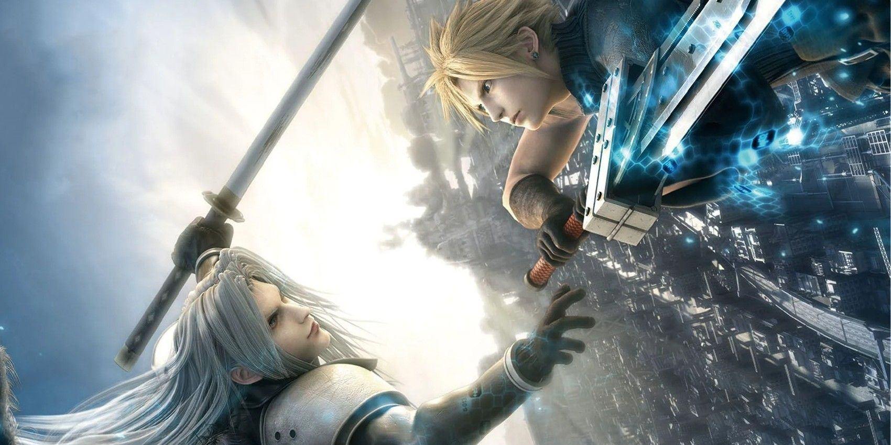

About Sephiroth
Sephiroth is the main antagonist of Final Fantasy VII. He is Cloud Strife's archenemy and is seen as a symbol of Cloud's troubled past. Once lauded as the greatest superhuman SOLIDER who ever lived, he was driven to insanity after learning of the experimention done on him by the Shinra corporation.
Sephiroth vs Cloud
Sephiroth's Characteristics
- One winged angel
- Once the most powerful member of SOLDIER and heroic invincible veteran of the Shinra-Wutai war.
- Sephiroth is intelligent and respects those he deems worthy.
- He is well spoken, graceful, calm, collected, and in control.
- He has a dry sense of humor
- Sephiroth wields the Masamune, a 7-foot long katana that he can summon at will.
Sephiroth's Friends
Sephiroth maintains an outwardly aloof and professional demeanor during his time at Shinra. He is known to have only two friends, Angeal Hewley and Genesis Rhapsodos.